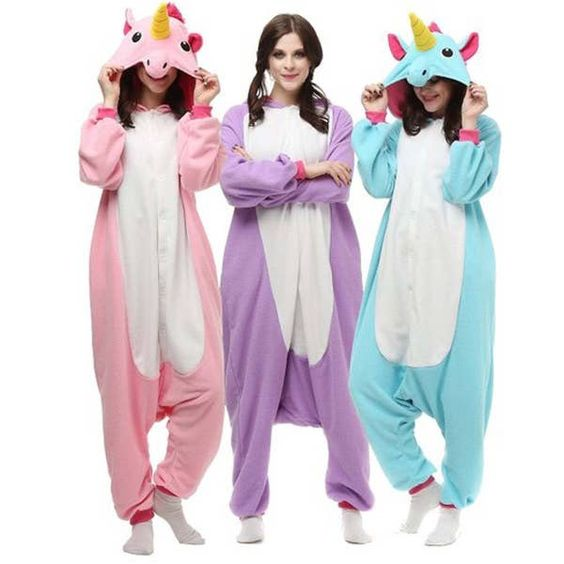
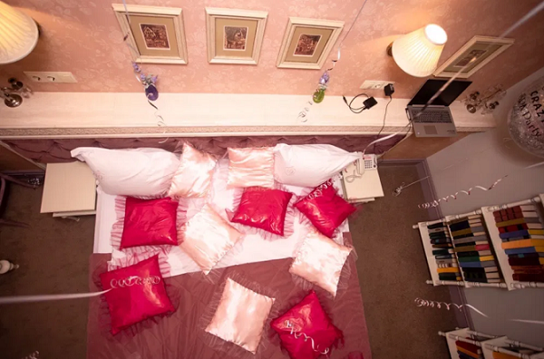

Піжамна вечірка - ідеї, вбрання та веселощі. Як організувати піжамну вечірку?
Піжамна вечірка - одне з найбільш очікуваних вечірніх заходів серед жінок, дітей і підлітків. Однак організувати таку забаву досить складно. Приготування закусок і місця для піжамної вечірки - ніщо в порівнянні з підбором правильного вбрання. Тож давайте розберемося, як правильно та оригінально підготувати такий вечір, щоб весело провести час!
Ідеї для гарного початку піжамної вечірки
Піжамна вечірка - досить оригінальний і непередбачуваний формат вечірнього заходу з дуже невимушеною і приємною атмосферою. І в цьому немає нічого дивного, адже відвідати цей захід може кожен, хто хоче приємно провести час з друзями.
Ідеї піжамної вечірки можуть бути дуже цікавими. Тим не менш, ігри та заходи цього вечора зазвичай досить передбачувані. Багато з них базуються на послідовному плануванні, гарній розвазі та багато сміху.
Як і будь-яка вечірка, піжамна вечірка повинна починатися із запрошень - адже час, проведений з близькими, це найголовніше. Залежно від того, хто і для кого організовує піжамну вечірку, запрошення повинні бути відповідними. Ви можете створити їх у комп’ютерній програмі, а потім роздрукувати, або витратити час і зробити їх вручну.
Цікавою ідеєю для піжамної вечірки є організація тематичного заходу - можна включити мотиви в запрошення для гостей і передати атмосферу організованої вечірки. Для дітей цікавою пропозицією може стати піжамна вечірка в стилі діснеївських казок, а для дорослих в атмосфері улюблених фільмів чи серіалів юності. Варто подбати про те, щоб запрошення знайомили гостей з тональністю вечірки і стосувались її тематики.
Що можна робити на піжамній вечірці?
Незважаючи на те, що піжамна вечірка може здатися дитячою, вона є відмінним видом розваги не тільки для дітей, але і для дорослих. Організовуючи піжамну вечірку, слід адаптувати атракціони та план розваг до віку гостей.
Як і будь-яка інша вечірка, піжамна вечірка обов'язково повинна включати їжу - її можна приготувати заздалегідь або замовити вже готову їжу.
Що ще можна робити на піжамній вечірці, крім їжі? Варто розглянути настільні ігри, кіномарафон і тімбілдінг. Останнє може бути рецептом для зміцнення довіри запрошених людей, навіть коли вони бачать один одного вперше в житті. Однак варто пам'ятати, що на першому місці повинен стояти комфорт ваших гостей - якщо ви боїтеся, що якась ваша ідея може образити запрошених, то краще від неї відмовитися. Ідеї для успішної піжамної вечірки, безсумнівно, також можуть включати відеоігри - танцювальні та вокальні змагання дуже захоплюють і виділяють ендорфіни, що перетворюються на загальні веселощі. Ще одна чудова ідея для піжамної вечірки — «жіноче царство» — створіть собі та друзям домашнє SPA, а на двері повісьте табличку «чоловікам вхід заборонено»!
Одяг для піжамної вечірки
Перш за все, на будь-який такий захід потрібно одягнутися зручно. Завдяки цьому веселощі, проведені вдома з кращими друзями, будуть збагачені гарним настроєм без будь-яких обмежень.
Витончена піжама чи, можливо, сучасний домашній одяг? Все залежить від характеру організованого заходу. Елегантна піжама ідеально підійде для по-справжньому жіночного серіального вечора. Для цього варто придбати піжамний комплект, що складається з довгих штанів і блузки з довгим рукавом. Матеріал такої піжами може бути з бавовни або віскози. Обидві надзвичайно приємні на дотик і візуально привабливі. Також цікавими можуть бути комбінезони з бавовни або плюшу. Під час карнавалу вони можуть набути казкового формату, що дозволить не тільки цікаво урізноманітнити захід, а й розважити гостей.
Не забудьте про халат, завдяки якому вам буде приємно тепло навіть протягом довгого вечора. Вишуканий халат також подарує вам відчуття комфорту та більшої свободи.
Ігри піжамної вечірки
Така вечірка відмінна можливість для довгих розмов і пліток. Однак, щоб розвага була успішною, потрібно щось більше. Чудовою ідеєю стануть :
- всі карткові ігри,
- настільні ігри,
- правда чи виклик,
- вечірні ігри, наприклад, табу та шаради.
Ви також можете запропонувати божевілля у віртуальному світі, включаючи відомі комп'ютерні ігри. Плануючи індивідуальні атракціони, враховуйте переваги друзів: кожен повинен знайти щось для себе.
Показ фільму в стилі піжамної вечірки
Ідеї для піжамної вечірки з подругами також включають кінопокази та марафони улюблених серіалів . Жанри, які найчастіше обирають під час дівочих зустрічей, це мелодрами, романтичні комедії та мюзикли. До популярних відносяться: «Щоденник Бріджит Джонс», «Гордість і упередження» і «Мамма Міа». Серед серіалів домінує «Секс у великому місті». Ці добре відомі назви є впевненими речами, які подобаються багатьом жінкам і ніколи не набриднуть.
Ти не любиш плачливих історій, але любиш лякатися? Вечір фільмів жахів промокне і зробить вечірку ще цікавішою. Якщо вам подобається ця ідея, вибирайте класику фільмів жахів, наприклад «Кошмар на вулиці В’язів», «Хелловін», «Крик», «Пила» або «Прокляття».
Спальні місця для піжамної вечірки
Питання про те, чим можна займатися на піжамній вечірці, так само важливий, як і те, де ви будете спати. Якщо ви запросите до себе кілька або кілька десятків друзів, може виявитися, що вам не вистачить спальних місць. Крім того, під час такої дівочої зустрічі ви повинні спати в одній кімнаті. Як це вирішити? Приготуйте ліжка з матрацами, спальними мішками та ковдрами та розмістіть їх у найбільшій кімнаті будинку.
Піжамна вечірка та салон краси
Без чого не може обійтися вечір з жінками? Одним із головних пунктів мають стати косметичні процедури, які перетворять ваш дім у професійний SPA-салон. Ідеї піжамної вечірки включають:
- різні види масок для обличчя,
- манікюр та педикюр,
- укладання волосся,
- експерименти з макіяжем.
Маючи ідеально нафарбовані нігті та феноменальний макіяж у кожної учасниці вечірки, можна влаштувати справжнє дефіле . Приготуйте для цього свої улюблені сукні (бажано, щоб кожна з дам взяла ефектне вбрання).
Приміряйте сукні та вибирайте аксесуари. Не забудте сфотографувати свої вбрання!
Закуски для піжамної вечірки
Атракціони та ігри в піжамній вечірці можуть бути дуже виснажливими. Тому ви повинні подбати про своїх гостей, запропонувавши їм відповідні частування. Під час такого особливого заходу варто відмовитися від усіх дієт і вийти на повну. Що це означає? Подавайте різноманітні закуски, такі як шоколад, морозиво, чіпси, попкорн і драже. Готуйте також улюблені коктейлі - адже головне - це чудовий настрій і чудове задоволення.
Крім закусок корисним буде і міцне друге блюдо. Звичайно, можна просто замовити піцу. Однак набагато цікавішим рішенням буде умовити дівчат готувати разом.